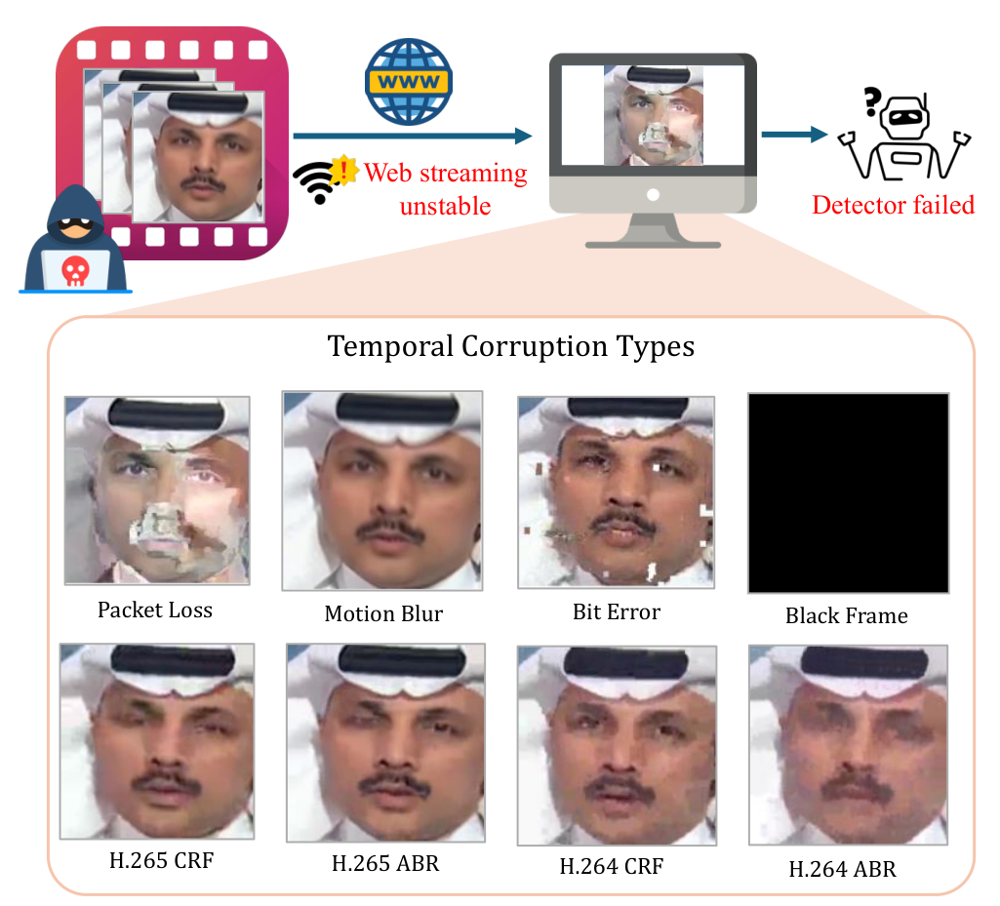
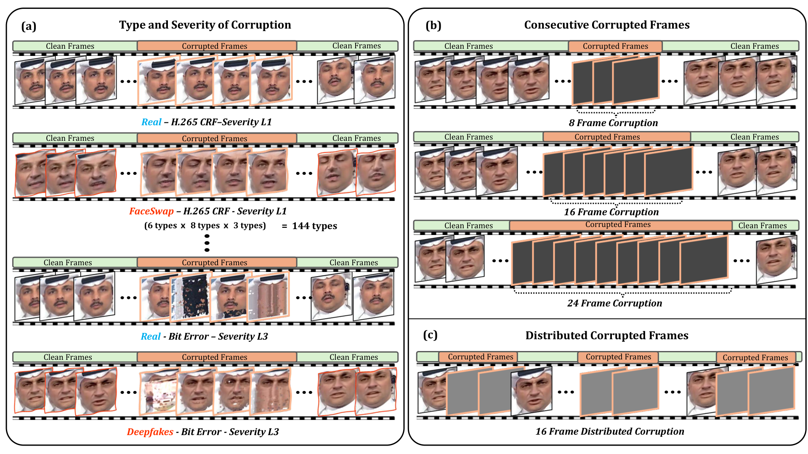
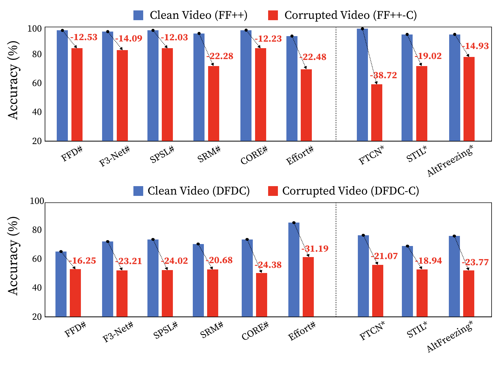
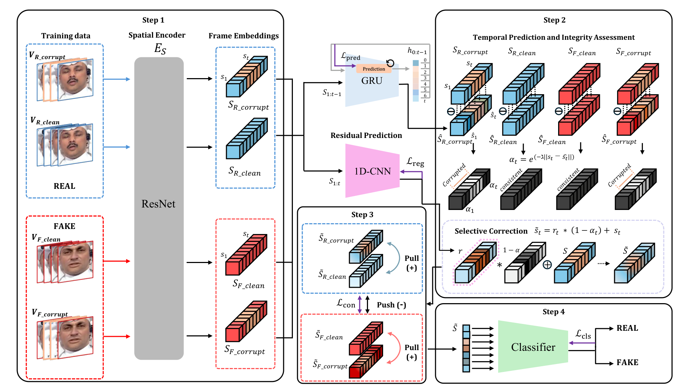

TL;DR
Streaming artifacts such as packet loss, bit errors, and aggressive compression corrupt deepfake videos over time and break existing detectors. We build DF-TCB to measure this, and propose ICR-Net, which scores per-frame integrity, corrects low-integrity frame embeddings, and aligns clean and corrupted views with contrastive learning.
- DF-TCB: eight temporal corruption types at three severity levels on FaceForensics++ and DFDC, giving the corrupted splits FF++-C and DFDC-C.
- Existing detectors are fragile: trained on clean FF++, FTCN drops by 38.72% from its 99.65% clean accuracy on FF++-C, and on DFDC-C all nine detectors fall to nearly 50% accuracy (Sec. 3.4, Fig. 3).
- ICR-Net: under corruption-aware training it keeps 97.86% on clean FF++, has the highest accuracy on 7 of the 8 FF++-C corruption types (Table 1), and on all 8 DFDC-C corruption types (Table 2).
Abstract
Deepfake video detection aims to distinguish AI-generated facial forgeries from authentic videos. While recent methods show strong performance under spatial corruptions, their robustness against temporal corruptions remains largely unexplored. In practical streaming scenarios, network disruptions such as packet loss, bit errors, and aggressive compression induce temporal degradations that current benchmarks do not cover. To bridge this gap, we introduce the DeepFake Temporal Corruption Benchmark (DF-TCB), built on FaceForensics++ and DFDC datasets with diverse corruption types and severities. Our analysis reveals that existing detectors are highly fragile under these disruptions. We therefore propose ICR-Net, which predicts frame reliability and selectively corrects corrupted features. By leveraging clean-corrupted contrastive learning, it extracts corruption-invariant, class-separable representations. We demonstrate that ICR-Net improves robustness and cross-dataset generalization under diverse temporal corruptions.
Motivation: Temporal Corruption in Streaming

Existing detectors have been evaluated mainly against spatial corruptions. The paper asks three questions:
- RQ1. How susceptible are current deepfake detectors to temporal corruptions?
- RQ2. How do these corruptions impact cross-dataset generalization?
- RQ3. How can we architect a framework that achieves temporal resilience without compromising clean-video accuracy?
DF-TCB: DeepFake Temporal Corruption Benchmark

Temporal corruptions and severity levels (L1 / L2 / L3)
| Corruption | What it simulates | Severity L1 / L2 / L3 |
|---|---|---|
| Black Frame | Transient signal loss; selected frames replaced with all-black pixels | 8 / 16 / 24 frames |
| Motion Blur | Fast-motion artifacts, temporally averaged over a sliding window | window 3 / 7 / 13 |
| Packet Loss | Network drops simulated via a virtual link | drop rate 1% / 3% / 5% |
| Bit Error | Bitstream corruption (blocking, smearing) simulated by bit flips | 1 per 100,000 / 30,000 / 10,000 |
| H.264 CRF | H.264 compression with Constant Rate Factor (libx264) | CRF 23 / 37 / 51 |
| H.264 ABR | H.264 compression with Average Bitrate | 1/2, 1/8, 1/32 of original bitrate |
| H.265 CRF | HEVC counterpart of H.264 CRF | CRF 27 / 39 / 51 |
| H.265 ABR | HEVC counterpart of H.264 ABR | 1/2, 1/8, 1/32 of original bitrate |
Clips have 32 frames, sampled with a fixed stride of 8. By default, 16 consecutive frames in each 32-frame clip are corrupted. Packet Loss is simulated over a controlled Mininet topology with UDP transport. The codec-based corruptions, Bit Error, and Motion Blur are produced with FFmpeg. FF++-C follows the official FF++ protocol (intra-dataset), and DFDC-C corrupts the DFDC test set (cross-dataset).
How robust are existing detectors?

All detectors are close to perfect on clean FF++ but degrade sharply under temporal corruption. Among frame-based methods, Effort shows the largest average decline (22.48%). The video-based FTCN drops by 38.72% from its 99.65% clean accuracy. Cross-dataset, the models reach 64.76–84.15% accuracy on clean DFDC, but even mild temporal corruptions reduce all of them to nearly 50% on DFDC-C.
ICR-Net

- Step 1: paired encoding. Clean and corrupted versions of real and fake clips pass through a shared spatial encoder ES, giving frame embeddings S = [s1, …, sT].
- Step 2: temporal integrity and correction. A GRU predicts ŝt from the preceding frames. The prediction error et = st − ŝt gives an integrity score αt = exp(−λα‖et‖2). A parallel 1D-CNN estimates a residual rt, fused by integrity gating s̃t = (1 − αt) rt + st, so corrections go mainly to low-integrity frames and reliable frames keep their forensic cues.
- Step 3: contrastive alignment. An InfoNCE-style loss treats the clean and corrupted views of the same video as positives and the two views of the opposite label in the same quartet as negatives. This yields corruption-invariant, class-separable features.
- Step 4: classification. A linear classifier on the pooled, refined clip feature is trained with binary cross-entropy.
- Objective: L = λ1Lpred + λ2Lreg + λ3Lcon + λ4Lcls with λ1 = 1.0, λ2 = 0.01, λ3 = 0.5, λ4 = 1.0 in all experiments.
Quantitative Results
TABLE 1 · Intra-dataset temporal corruption robustness of deepfake detectors (FF++ / FF++-C).
| Model | Clean | Black Frame | Motion Blur | Packet Loss | Bit Error | H.264 CRF | H.264 ABR | H.265 CRF | H.265 ABR |
|---|---|---|---|---|---|---|---|---|---|
| Frame-based | |||||||||
| FFD | 98.14 | 85.89 | 91.23 | 90.98 | 90.83 | 91.80 | 88.70 | 91.44 | 90.63 |
| F3-Net | 98.10 | 85.84 | 88.16 | 90.22 | 90.47 | 90.47 | 88.33 | 89.21 | 92.05 |
| SPSL | 98.29 | 84.76 | 91.24 | 86.94 | 91.84 | 85.64 | 85.31 | 91.89 | 91.81 |
| SRM | 97.87 | 86.11 | 88.27 | 90.85 | 92.09 | 91.45 | 91.17 | 90.04 | 90.21 |
| CORE | 98.27 | 85.23 | 85.14 | 90.18 | 91.43 | 86.22 | 87.93 | 89.10 | 90.66 |
| Effort | 94.40 | 84.36 | 85.52 | 86.75 | 87.26 | 85.80 | 85.61 | 85.52 | 86.67 |
| Video-based | |||||||||
| FTCN | 87.62 | 86.37 | 82.64 | 82.97 | 82.65 | 83.48 | 83.69 | 83.69 | 83.54 |
| STIL | 97.35 | 86.00 | 91.31 | 86.83 | 89.58 | 88.35 | 89.15 | 92.16 | 89.28 |
| AltFreezing | 97.21 | 91.54 | 90.71 | 85.73 | 90.77 | 89.40 | 94.58 | 92.55 | 90.47 |
| ICR-Net (ours) | 97.86 | 94.92 | 94.88 | 96.03 | 96.67 | 96.55 | 92.93 | 97.50 | 95.83 |
TABLE 2 · Cross-dataset temporal corruption robustness of deepfake detectors (DFDC / DFDC-C).
| Model | Clean | Black Frame | Motion Blur | Packet Loss | Bit Error | H.264 CRF | H.264 ABR | H.265 CRF | H.265 ABR |
|---|---|---|---|---|---|---|---|---|---|
| Frame-based | |||||||||
| FFD | 61.41 | 50.32 | 50.12 | 50.49 | 50.22 | 50.38 | 50.19 | 51.02 | 49.73 |
| F3-Net | 72.02 | 49.93 | 49.77 | 50.01 | 49.92 | 50.13 | 49.68 | 49.33 | 49.59 |
| SPSL | 72.15 | 50.41 | 50.18 | 50.25 | 49.97 | 50.03 | 49.83 | 50.31 | 50.28 |
| SRM | 69.91 | 50.11 | 50.34 | 49.95 | 50.21 | 49.87 | 49.72 | 49.54 | 49.61 |
| CORE | 71.28 | 50.23 | 49.91 | 50.17 | 50.33 | 49.88 | 49.52 | 49.78 | 49.44 |
| Effort | 79.85 | 55.13 | 54.88 | 54.02 | 54.71 | 54.96 | 53.87 | 55.43 | 53.69 |
| Video-based | |||||||||
| FTCN | 61.21 | 53.11 | 52.89 | 53.39 | 54.12 | 53.02 | 52.07 | 53.34 | 53.55 |
| STIL | 67.71 | 49.15 | 49.98 | 48.50 | 50.05 | 48.61 | 48.01 | 50.24 | 49.82 |
| AltFreezing | 72.95 | 51.82 | 50.73 | 51.23 | 50.15 | 51.35 | 49.22 | 57.11 | 51.47 |
| ICR-Net (ours) | 78.56 | 58.14 | 59.23 | 59.51 | 58.98 | 59.12 | 57.98 | 59.88 | 58.33 |
Video-level accuracy (ACC, %). All baselines and ICR-Net use the same corruption-aware training: each training video contributes a clean clip and a clip with a single temporal corruption at severity level 3. Corrupted columns are the mean accuracy across the three severity levels. Bold = best, underline = second best, as marked in the paper.
Ablation of Training Objectives
TABLE 3 · Ablation study of loss components in ICR-Net.
| Lpred | Lreg | Lcon | Clean | Corrupted |
|---|---|---|---|---|
| × | × | × | 91.57 | 86.38 |
| ✓ | × | × | 96.50 | 88.38 |
| × | ✓ | × | 82.54 | 77.61 |
| × | × | ✓ | 95.31 | 85.20 |
| ✓ | ✓ | × | 97.33 | 89.96 |
| × | ✓ | ✓ | 84.33 | 78.14 |
| ✓ | × | ✓ | 96.55 | 91.15 |
| ✓ | ✓ | ✓ | 97.86 | 95.67 |
Row 1 (classification loss Lcls only) is the baseline. The full model (last row) reaches 97.86% on clean and 95.67% on corrupted data. Lreg alone hurts accuracy, because the model can trivially minimize the integrity scores.
Citation
If you find this work useful, please cite:
@inproceedings{park2026icrnet,
title = {{ICR-Net}: Robust Deepfake Detection under Temporal Corruption},
author = {Park, Chan and Choi, Hyeongjun and Muneer, Muhammad Shahid
and Le, Binh Minh and Woo, Simon S.},
booktitle = {Proceedings of the 30th Pacific-Asia Conference on Knowledge
Discovery and Data Mining (PAKDD 2026)},
year = {2026},
doi = {10.1007/978-981-92-1465-5_24}
}